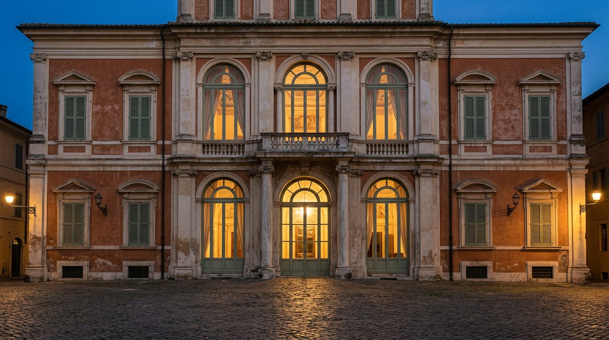

28 febbraio 2013 — l'ultimo volo di Benedetto XVI.

Per tre ore, un giorno d'inverno, Castel Gandolfo fu il luogo in cui finiva un pontificato. Benedetto XVI vi arrivò in elicottero da Papa e, alle otto di sera, vi rimase da Papa emerito. Ecco come andarono le cose, ora per ora, secondo i documenti ufficiali della Santa Sede.
L'annuncio dell'11 febbraio
La mattina dell'11 febbraio 2013 Benedetto XVI aveva convocato in Vaticano un concistoro ordinario per la canonizzazione dei martiri di Otranto. Al termine, inaspettatamente, annunciò la rinuncia (Stato della Città del Vaticano). Nella Declaratio, letta in latino (Zenit), spiegava che per governare la barca di san Pietro è necessario “il vigore sia del corpo, sia dell'animo”, e che in lui quel vigore era diminuito; la rinuncia sarebbe valsa “dal 28 febbraio 2013, alle ore 20,00”, quando la sede di Roma sarebbe stata vacante (Santa Sede).
Il direttore delle Ville Pontificie fu informato in via riservata: la sera del 28 febbraio il Papa si sarebbe trasferito a Castel Gandolfo, in attesa che gli fosse preparata una dimora nel monastero Mater Ecclesiae in Vaticano (Stato della Città del Vaticano). Il borgo conosceva bene Benedetto XVI: vi era giunto per la prima volta il 5 maggio 2005, pochi giorni dopo l'elezione, e vi aveva trascorso ogni estate.
Ore 11, Sala Clementina
L'ultimo giorno cominciò in Vaticano. Alle 11, nella Sala Clementina, il Papa salutò i cardinali presenti a Roma. Prima di stringere la mano a ciascuno, pronunciò una frase destinata a restare: “tra voi, tra il Collegio Cardinalizio, c'è anche il futuro Papa al quale già oggi prometto la mia incondizionata reverenza ed obbedienza” (Sala Stampa della Santa Sede).
Poco dopo le 17, il decollo
Nel pomeriggio Benedetto XVI lasciò il Palazzo Apostolico. Secondo la Sala Stampa vaticana, “poco dopo le ore 17” partì in elicottero dall'eliporto vaticano verso Castel Gandolfo, dove giunse dopo quindici minuti di volo (Sala Stampa della Santa Sede). Le cronache dell'epoca collocano il decollo tra le 17.05 e le 17.07, mentre le campane di San Pietro suonavano (EWTN News). All'arrivo lo attendevano, tra gli altri, il cardinale Giuseppe Bertello, presidente del Governatorato, e il sindaco di Castel Gandolfo (Inside the Vatican).
Ore 17.38, la loggia
La piazza era gremita dei fedeli della diocesi di Albano. Alle 17.38 il Papa si affacciò dalla loggia centrale del Palazzo Apostolico (Sala Stampa della Santa Sede) e parlò a braccio, per pochi minuti. Furono le sue ultime parole pubbliche da Pontefice:
“Sono semplicemente un pellegrino che inizia l'ultima tappa del suo pellegrinaggio in questa terra.”Benedetto XVI, loggia del Palazzo Apostolico, 28 febbraio 2013
Poco prima aveva detto: “Voi sapete che questo mio giorno è diverso da quelli precedenti; non sono più Sommo Pontefice della Chiesa cattolica: fino alle otto di sera lo sarò ancora, poi non più”. Promise di lavorare ancora, “con tutte le mie forze interiori”, per il bene della Chiesa e dell'umanità, impartì la benedizione e si congedò con un semplice “Grazie, buona notte!” (Santa Sede). Poi si ritirò nel suo appartamento (Stato della Città del Vaticano).
Ore 20, il portone
La gente non se ne andò. Alle 20, davanti a una piazza illuminata a giorno e gremita, venne chiuso il portone del Palazzo; contemporaneamente fu ammainata la bandiera che vi sventolava nei periodi di permanenza del Papa. Era il segno visibile dell'inizio della sede vacante (Stato della Città del Vaticano). Con la rinuncia terminò anche il servizio della Guardia Svizzera, scorta personale del Pontefice: da quel momento la sicurezza dell'ex Papa passò alla sola Gendarmeria vaticana (Wikipedia).
I due mesi da Papa emerito
Benedetto XVI rimase a Castel Gandolfo fino al 2 maggio 2013, giorno del suo rientro in Vaticano (Stato della Città del Vaticano). In quelle settimane il conclave elesse, il 13 marzo, il cardinale Jorge Mario Bergoglio. Il 23 marzo, in tarda mattinata, Papa Francesco atterrò all'eliporto delle Ville Pontificie, dove lo aspettava il Papa emerito: i due salirono sulla stessa auto e raggiunsero il Palazzo per un colloquio e il pranzo, “un inedito storico” secondo la cronaca vaticana (Stato della Città del Vaticano).
Oggi la loggia di quel saluto si vede dalla piazza della Libertà, il centro del borgo. Per chi la guarda conoscendo questa storia, è il balcone da cui un Papa disse buona notte e scelse di diventare pellegrino.